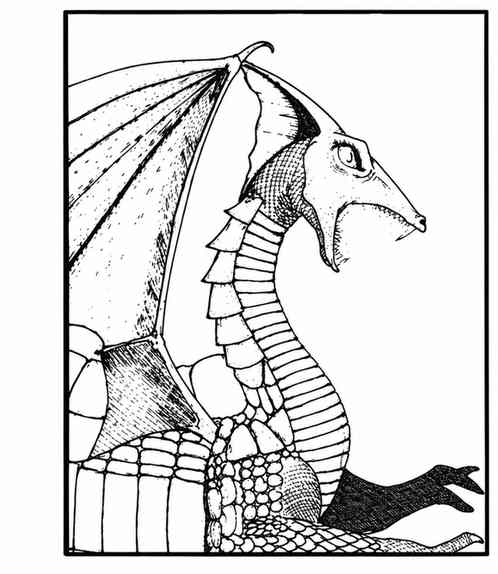

白龙 · White Dragon（Draco Rigidus Frigidus）
 |
|
白龙喜欢寒冷地区，在冰洞或深邃地下空间筑巢。它们不如多数龙聪明，却同样邪恶贪婪。白龙以爪、爪、咬攻击，或喷吐寒冷（冰霜）锥；吐息长 7 寸，底部直径 2½ 寸。罕见的施法白龙最多可施展四个一环法术，在第二、第四、第六、第八年龄阶段各获得一个。随机决定法术；若结果重复，则表示该法术每日可使用两次、三次或四次。
上一节：银龙 · Silver Dragon（Draco Nobilis Argentum）
下一节：龙狮兽 · Dragonne